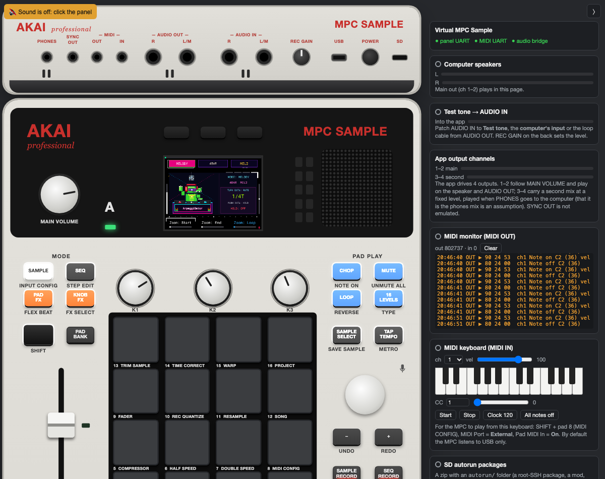
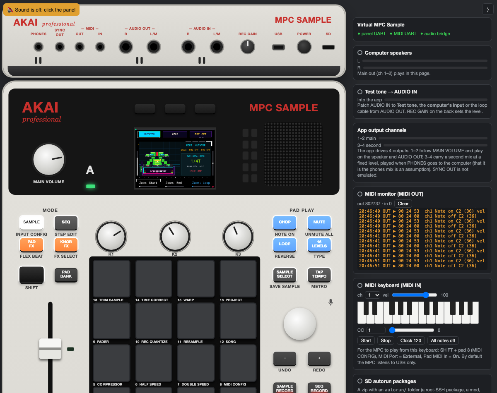
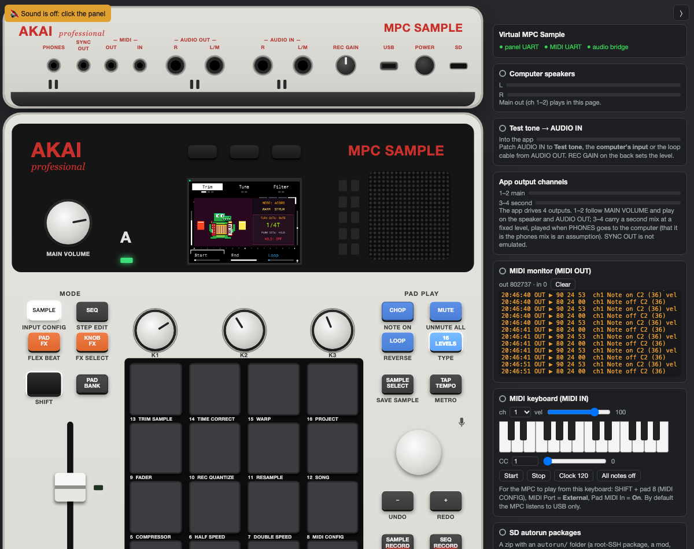
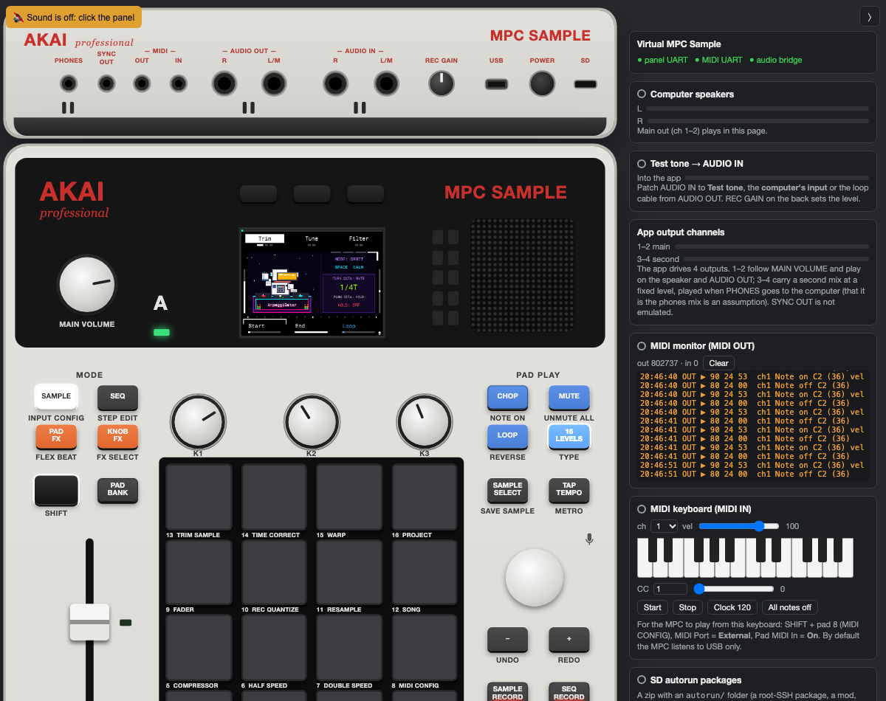

v0.0.7.2 published release: v0.0.7.2 · UI baseline v0.0.6.0 · build 34a9ec26…
Full text version: USERS-MANUAL-0.0.7.2.md. Below is a short version with screenshots from the clean v0.0.6.0 build. Version 0.0.7.2 adds the chord-mode spelling fixes: ACCORDATOR / MODE: ACCORD on top of the native audio engine.
MPC Sample (firmware)
└── SAMPLE screen
└── 16 LEVELS
└── [SHIFT held OR engine enabled] → ArpeggiGator overlay
├── left: animation (a different gator for each mode)
├── top right: MODE + parameters + RATE + HOLD
└── bottom: B1 / B2 / B3 captions (only while SHIFT is held)
| Button | Without SHIFT | With SHIFT |
|---|---|---|
| B1 / SCREEN 1 | — | Change mode: Off → ARP → MELODY → MUTATOR → ACCORDATOR → ORBITATOR → Off |
| B2 / SCREEN 2 | — | Parameter 1 (depends on the mode) |
| B3 / SCREEN 3 | — | Parameter 2 (depends on the mode) |
| DATA | turn = RATE, press = HOLD | no action |
| 16 LEVELS | enter/exit the view | does not exit the view |
| PAD 1…16 | notes for the engine | firmware shortcut, not a note |
| STOP | double press within ≤650 ms = full reset | — |
| PLAY | the mod only reads the firmware transport | — |
| Mode | B2 | B3 |
|---|---|---|
| ARP | UP → DOWN → UP/DOWN → DOWN/UP → CONVERGE → DIVERGE → RANDOM → PLAYED | +0 → +1 → +2 → +3 octaves |
| MELODY | 2BAR → 4BAR → 8BAR → 16BAR | MEL1 … MEL9 |
| MUTATOR | SUBTLE → WILD → CHAOS | FRZ OFF ⇄ FRZ ON |
| ACCORDATOR | WARM → SAD → SPACE → CINEMA | STRUM → PULSE → WAVE |
| ORBITATOR | AMBIENT → SPACE → DARK → RHYTHM | CALM → FLOW → WILD |








Set MELODY + HOLD, let the sequence play → go to the Sample tab (music does not stop) → tap pads to change one sample for the whole sequence. New notes use the new sample; a voice that is already sounding is not retuned.
SHIFT + B3 toggles FRZ ON/OFF. It stops buffer mutation — subsequent loops play identically. The state is shown in the B3 caption and in the mod panel.
Double STOP within 650 ms = Off, clear the engines, HOLD, the active sample and the LEDs.
Version 0.0.7.2 — one codebase, two delivery profiles. Both artifacts are published under the v0.0.7.2 tag.
| Artifact | Purpose | SHA-256 |
|---|---|---|
arpeggigator-v0.0.7.2.zipdownload from the v0.0.7.2 release |
SD card → physical MPC Sample 1.3.0.12. After unpacking, copy the autorun/ folder to the card. |
a882223bfea2d9e96e4e1d8d2067974c35952ad688526fe24122354fe1936fba |
arpeggigator-v0.0.7.2-lab.sodownload from the v0.0.7.2 release |
Emulator / QA-DEV: python3 lab.py preload …. This is not an SD-card package. |
3e2fac83cc4a9c5fe3421b2e58b4ec47f1943be60d1988cec01ef013d785aca8 |
The arpeggigator-v0.0.7.2.zip.sha256 sidecar is in the same release. Verify the package before inserting the card:shasum -a 256 -c arpeggigator-v0.0.7.2.zip.sha256
Source: published v0.0.7.2 release, documentation updated for 0.0.7.2 label change. UI description and screenshots from v0.0.6.0. Screenshots: DEV, build 34a9ec26…, 18 Nov 2026. Manual by Heniek.